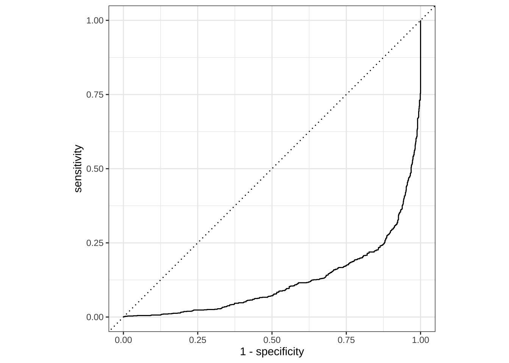

library(tidymodels) # for the parsnip package, along with the rest of tidymodels
# Helper packages
library(dlookr) # for variable summaries
library(RCurl) # for reading in text files from a URL
# Set global theme for ggplots
theme_set(theme_minimal(base_size = 14))# minimal theme, 14pt font
theme_update(legend.position = "right") # legend to the rightTidymodels: Preprocess your Data with Recipes
Description
Python has taken most of the hype as the most widely used programming language for machine learning. This has left R users with a choice: 1. learn Python or 2. don’t do machine learning very well. Enter tidymodels, Posit’s solution to machine learning in R, using a framework similar to the tidyverse.
In this session of the Classical Machine Learning workshop series, we preprocess our data to be used in a model using the recipes package from tidymodels in R. This is the a necessary step towards the more sophisticated models that we will deploy later in this series.
This workshop borrows heavily from open source materials hosted on tidymodels.org found here. The author replaced the original flights data with (Merchant et al. 2022) which is described below.
Objectives:
- Load and examine data
- Split data
- Create a recipe and roles for a model
- Create features from the data
- Fit a model with a recipe
- Use a trained workflow to predict
Introduction
In this article, we’ll explore another tidymodels package, recipes, which is designed to help you preprocess your data before training your model. Recipes are built as a series of preprocessing steps, such as:
converting qualitative predictors to indicator variables (also known as dummy variables),
transforming data to be on a different scale (e.g., taking the logarithm of a variable),
transforming whole groups of predictors together,
extracting key features from raw variables (e.g., getting the day of the week out of a date variable),
and so on. If you are familiar with R’s formula interface, a lot of this might sound familiar and like what a formula already does. Recipes can be used to do many of the same things, but they have a much wider range of possibilities. This article shows how to use recipes for modeling.
To use code in this article, you will need to install the following packages: dlookr, RCurl, and tidymodels.
University of Arizona Test-Trace-Treat COVID-19 testing results
Let’s use the data from (Merchant et al. 2022) which is is the archive for the University of Arizona Test, Trace, Treat (T3) clinical diagnostic tests (Antigen, TR-PCR: test_type) to determine whether an individual is currently infected with the COVID-19 virus.
# Read in csv from the web
data <- getURL("https://raw.githubusercontent.com/Gchism94/Data7_EDA_In_R_Workshops/main/Data7_EDA_In_R_Book/data/daily_summary.csv")
data <- read.csv(text = data)Examine the data
data %>%
head() result_date affil_category test_type test_result test_count
1 2020-08-04 Employee Antigen Negative 5
2 2020-08-04 Employee Antigen Positive 0
3 2020-08-04 Employee Antigen Negative 1
4 2020-08-04 Employee Antigen Positive 0
5 2020-08-04 Off-Campus Student Antigen Negative 9
6 2020-08-04 Off-Campus Student Antigen Positive 1
test_source
1 Campus Health
2 Campus Health
3 Test All Test Smart
4 Test All Test Smart
5 Campus Health
6 Campus HealthFor each test we know:
result_date: date in which the test result was on
affil_category: a testing individual’s affiliation with UArizona (Off-Campus Student, Employee, On-Campus Student, Other)test_type: Antigen, PCR, or Antibodytest_result: result of the test (Positive or Negative)test_source: where the test came fromtest_count: the number of tests within the combination:test_type,test_result,test_source,affil_category,result_date.
Let’s use this data to predict whether a positive COVID-19 test was more likely when testing happened more.
We can see that there are exactly the same number of Positive and Negative values, but there are also inconclusive tests.
data %>%
count(test_result) %>%
mutate(prop = n/sum(n)) test_result n prop
1 Inconclusive 30 0.003267974
2 Negative 4575 0.498366013
3 Positive 4575 0.498366013Let’s remove the Inconclusive values because they are not relevant to our question and create a date R object column associated with result_date.
data_mod <-
data %>%
filter(test_result != "Inconclusive") %>%
mutate(test_result = factor(test_result),
date = lubridate::as_date(result_date))Before we start building up our recipe, let’s take a quick look at a few specific variables that will be important for both preprocessing and modeling.
First, notice that we only have one numerical variable test_count, which is discrete. Also note that test_result is a factor variable; it is important that our outcome variable for training a logistic regression model is a factor.
glimpse(data_mod)Rows: 9,150
Columns: 7
$ result_date <chr> "2020-08-04", "2020-08-04", "2020-08-04", "2020-08-04",…
$ affil_category <chr> "Employee", "Employee", "Employee", "Employee", "Off-Ca…
$ test_type <chr> "Antigen", "Antigen", "Antigen", "Antigen", "Antigen", …
$ test_result <fct> Negative, Positive, Negative, Positive, Negative, Posit…
$ test_count <int> 5, 0, 1, 0, 9, 1, 0, 1, 77, 0, 4, 0, 1, 0, 5, 0, 1, 0, …
$ test_source <chr> "Campus Health", "Campus Health", "Test All Test Smart"…
$ date <date> 2020-08-04, 2020-08-04, 2020-08-04, 2020-08-04, 2020-0…Second, there are two variables that we don’t want to use as predictors in our model, but that we would like to retain as identification variables that can be used to troubleshoot poorly predicted data points. These are test_source, a factor value, and result_date, a date-time value.
Third, there are 4 UArizona affiliations in affil_category and 3 distinct values in test_type.
data_mod %>%
dlookr::diagnose_category(affil_category, test_type)# A tibble: 7 × 6
variables levels N freq ratio rank
<chr> <chr> <int> <int> <dbl> <int>
1 affil_category Off-Campus Student 9150 3348 36.6 1
2 affil_category Employee 9150 2984 32.6 2
3 affil_category On-Campus Student 9150 2816 30.8 3
4 affil_category Other 9150 2 0.0219 4
5 test_type Antigen 9150 4624 50.5 1
6 test_type PCR 9150 4524 49.4 2
7 test_type Antibody 9150 2 0.0219 3Because we’ll be using a simple logistic regression model, the variables affil_category and test_type will be converted to dummy variables. However, some of these values do not occur as frequently and this could complicate our analysis. We’ll discuss specific steps later in this article that we can add to our recipe to address this issue before modeling.
Data Splitting
To get started, let’s split this single dataset into two: a training set and a testing set. We’ll keep most of the rows in the original dataset (subset chosen randomly) in the training set. The training data will be used to fit the model, and the testing set will be used to measure model performance.
To do this, we can use the rsample package to create an object that contains the information on how to split the data, and then two more rsample functions to create data frames for the training and testing sets:
# Fix the random numbers by setting the seed
# This enables the analysis to be reproducible when random numbers are used
set.seed(222)
# Put 3/4 of the data into the training set
data_split <- initial_split(data_mod, prop = 3/4)
# Create data frames for the two sets:
train_data <- training(data_split)
test_data <- testing(data_split)Create Recipe and Roles
To get started, let’s create a recipe for a simple logistic regression model. Before training the model, we can use a recipe to create a few new predictors and conduct some preprocessing required by the model.
Let’s initiate a new recipe:
covid_rec <-
recipe(test_result ~ ., data = train_data)The recipe() function as we used it here has two arguments:
A formula. Any variable on the left-hand side of the tilde (
~) is considered the model outcome (here,test_result). On the right-hand side of the tilde are the predictors. Variables may be listed by name, or you can use the dot (.) to indicate all other variables as predictors.The data. A recipe is associated with the data set used to create the model. This will typically be the training set, so
data = train_datahere. Naming a data set doesn’t actually change the data itself; it is only used to catalog the names of the variables and their types, like factors, integers, dates, etc.
Now we can add roles to this recipe. We can use the update_role() function to let recipes know that test_source and date are variables with a custom role that we called "ID" (a role can have any character value). Whereas our formula included all variables in the training set other than test_result as predictors, this tells the recipe to keep these two variables but not use them as either outcomes or predictors.
covid_rec <-
recipe(test_result ~ ., data = train_data) %>%
update_role(test_source, result_date, new_role = "ID")This step of adding roles to a recipe is optional; the purpose of using it here is that those two variables can be retained in the data but not included in the model. This can be convenient when, after the model is fit, we want to investigate some poorly predicted value. These ID columns will be available and can be used to try to understand what went wrong.
To get the current set of variables and roles, use the summary() function:
summary(covid_rec)# A tibble: 7 × 4
variable type role source
<chr> <list> <chr> <chr>
1 result_date <chr [3]> ID original
2 affil_category <chr [3]> predictor original
3 test_type <chr [3]> predictor original
4 test_count <chr [2]> predictor original
5 test_source <chr [3]> ID original
6 date <chr [1]> predictor original
7 test_result <chr [3]> outcome originalCreate Features
Now we can start adding steps onto our recipe using the pipe operator. Perhaps it is reasonable for the date of the flight to have an effect on the likelihood of a late arrival. A little bit of feature engineering might go a long way to improving our model. How should the date be encoded into the model? The date column has an R date object so including that column “as is” will mean that the model will convert it to a numeric format equal to the number of days after a reference date:
data_mod %>%
distinct(result_date) %>%
mutate(result_date = lubridate::ymd(result_date),
numeric_date = as.integer(format(result_date, "%Y%m%d"))) %>%
head() result_date numeric_date
1 2020-08-04 20200804
2 2020-08-05 20200805
3 2020-08-06 20200806
4 2020-08-07 20200807
5 2020-08-09 20200809
6 2020-08-10 20200810It’s possible that the numeric date variable is a good option for modeling; perhaps the model would benefit from a linear trend between the log-odds of a Positive COVID-19 test and the numeric date variable. However, it might be better to add model terms derived from the date that have a better potential to be important to the model. For example, we could derive the following meaningful features from the single date variable:
the day of the week,
the month, and
whether or not the date corresponds to a holiday.
Let’s do all three of these by adding steps to our recipe:
covid_rec <-
recipe(test_result ~ ., data = train_data) %>%
update_role(test_source, result_date, new_role = "ID") %>%
step_date(date, features = c("dow", "month")) %>%
step_holiday(date,
holidays = timeDate::listHolidays("US"),
keep_original_cols = FALSE)What do each of these steps do?
With
step_date(), we created two new factor columns with the appropriate day of the week and the month.With
step_holiday(), we created a binary variable indicating whether the current date is a holiday or not. The argument value oftimeDate::listHolidays("US")uses the timeDate package to list the 17 standard US holidays.With
keep_original_cols = FALSE, we remove the originaldatevariable since we no longer want it in the model. Many recipe steps that create new variables have this argument.
Next, we’ll turn our attention to the variable types of our predictors. Because we plan to train a logistic regression model, we know that predictors will ultimately need to be numeric, as opposed to nominal data like strings and factor variables. In other words, there may be a difference in how we store our data (in factors inside a data frame), and how the underlying equations require them (a purely numeric matrix).
For factors like affil_category and test_type, standard practice is to convert them into dummy or indicator variables to make them numeric. These are binary values for each level of the factor. For example, our test_type variable has values of "Antigen", "PCR", and "Antibody". The standard dummy variable encoding, shown below, will create two numeric columns of the data that are 1 when the originating airport is "PCR" or "Antibody" and zero otherwise, respectively.
| test_type | test_type_PCR | test_type_Antibody |
|---|---|---|
| PCR | 1 | 0 |
| Antigen | 0 | 0 |
| Antibody | 0 | 1 |
But, unlike the standard model formula methods in R, a recipe does not automatically create these dummy variables for you; you’ll need to tell your recipe to add this step. This is for two reasons. First, many models do not require numeric predictors, so dummy variables may not always be preferred. Second, recipes can also be used for purposes outside of modeling, where non-dummy versions of the variables may work better. For example, you may want to make a table or a plot with a variable as a single factor. For those reasons, you need to explicitly tell recipes to create dummy variables using step_dummy():
covid_rec <-
recipe(test_result ~ ., data = train_data) %>%
update_role(test_source, result_date, new_role = "ID") %>%
step_date(date, features = c("dow", "month")) %>%
step_holiday(date,
holidays = timeDate::listHolidays("US"),
keep_original_cols = FALSE) %>%
step_dummy(all_nominal_predictors())Here, we did something different than before: instead of applying a step to an individual variable, we used selectors to apply this recipe step to several variables at once, all_nominal_predictors(). The selector functions can be combined to select intersections of variables.
At this stage in the recipe, this step selects the affil_category and test_type variables. It also includes two new variables, date_dow and date_month, that were created by the earlier step_date().
More generally, the recipe selectors mean that you don’t always have to apply steps to individual variables one at a time. Since a recipe knows the variable type and role of each column, they can also be selected (or dropped) using this information.
We need one final step to add to our recipe. Since affil_category and test_type have some infrequently occurring factor values, it is possible that dummy variables might be created for values that don’t exist in the training set. Thankfully, we don’t see this problem with, for example, affil_category:
test_data %>%
distinct(affil_category) %>%
anti_join(train_data)Joining with `by = join_by(affil_category)`[1] affil_category
<0 rows> (or 0-length row.names)When the recipe is applied to the training set, a column is made for each of the factor levels come from data (not the training set), but this column may contain all zeros if each factor is not represented in both the training and testing data. This would a “zero-variance predictor” that has no information within the column. While some R functions will not produce an error for such predictors, it usually causes warnings and other issues. step_zv() will remove columns from the data when the training set data have a single value, so it is added to the recipe after step_dummy():
covid_rec <-
recipe(test_result ~ ., data = train_data) %>%
update_role(test_source, result_date, new_role = "ID") %>%
step_date(date, features = c("dow", "month")) %>%
step_holiday(date,
holidays = timeDate::listHolidays("US"),
keep_original_cols = FALSE) %>%
step_dummy(all_nominal_predictors()) %>%
# shouldn't change anything, but good practice to include
step_zv(all_predictors())Now we’ve created a specification of what should be done with the data. How do we use the recipe we made?
Fit a Model with a Recipe
Let’s use logistic regression to model the COVID-19 testing data. As we saw in Build a Model, we start by building a model specification using the parsnip package:
lr_mod <-
logistic_reg() %>%
set_engine("glm")We will want to use our recipe across several steps as we train and test our model. We will:
Process the recipe using the training set: This involves any estimation or calculations based on the training set. For our recipe, the training set will be used to determine which predictors should be converted to dummy variables and which predictors will have zero-variance in the training set, and should be slated for removal.
Apply the recipe to the training set: We create the final predictor set on the training set.
Apply the recipe to the test set: We create the final predictor set on the test set. Nothing is recomputed and no information from the test set is used here; the dummy variable and zero-variance results from the training set are applied to the test set.
To simplify this process, we can use a model workflow, which pairs a model and recipe together. This is a straightforward approach because different recipes are often needed for different models, so when a model and recipe are bundled, it becomes easier to train and test workflows. We’ll use the workflows package from tidymodels to bundle our parsnip model (lr_mod) with our recipe (covid_rec).
covid_wflow <-
workflow() %>%
add_model(lr_mod) %>%
add_recipe(covid_rec)
covid_wflow══ Workflow ════════════════════════════════════════════════════════════════════
Preprocessor: Recipe
Model: logistic_reg()
── Preprocessor ────────────────────────────────────────────────────────────────
4 Recipe Steps
• step_date()
• step_holiday()
• step_dummy()
• step_zv()
── Model ───────────────────────────────────────────────────────────────────────
Logistic Regression Model Specification (classification)
Computational engine: glm Now, there is a single function that can be used to prepare the recipe and train the model from the resulting predictors:
covid_fit <-
covid_wflow %>%
fit(data = train_data)Warning: glm.fit: fitted probabilities numerically 0 or 1 occurredThis object has the finalized recipe and fitted model objects inside. You may want to extract the model or recipe objects from the workflow. To do this, you can use the helper functions extract_fit_parsnip() and extract_recipe(). For example, here we pull the fitted model object then use the broom::tidy() function to get a tidy tibble of model coefficients:
covid_fit %>%
extract_fit_parsnip() %>%
tidy()# A tibble: 36 × 5
term estimate std.error statistic p.value
<chr> <dbl> <dbl> <dbl> <dbl>
1 (Intercept) 11.8 197. 0.0601 9.52e- 1
2 test_count -0.137 0.00606 -22.6 5.18e-113
3 date_USColumbusDay 0.0285 0.480 0.0594 9.53e- 1
4 date_USCPulaskisBirthday 0.0355 0.513 0.0693 9.45e- 1
5 date_USElectionDay 0.0333 0.432 0.0770 9.39e- 1
6 date_USGoodFriday -0.181 0.500 -0.363 7.16e- 1
7 date_USInaugurationDay -0.102 0.484 -0.210 8.34e- 1
8 date_USLincolnsBirthday 0.264 0.674 0.393 6.95e- 1
9 date_USMLKingsBirthday 4.72 7.25 0.652 5.15e- 1
10 date_USNewYearsDay -1.54 1.31 -1.17 2.42e- 1
# … with 26 more rowsUse a Trained Workflow to Predict
Our goal was to predict whether more testing led to more positive results. We have just:
Built the model (
lr_mod),Created a preprocessing recipe (
covid_rec),Bundled the model and recipe (
covid_wflow), andTrained our workflow using a single call to
fit().
The next step is to use the trained workflow (covid_fit) to predict with the unseen test data, which we will do with a single call to predict(). The predict() method applies the recipe to the new data, then passes them to the fitted model.
predict(covid_fit, test_data)# A tibble: 2,288 × 1
.pred_class
<fct>
1 Negative
2 Positive
3 Positive
4 Positive
5 Negative
6 Positive
7 Negative
8 Positive
9 Positive
10 Negative
# … with 2,278 more rowsBecause our outcome variable here is a factor, the output from predict() returns the predicted class: Negative versus Positive. But, let’s say we want the predicted class probabilities for each test_source instead. To return those, we can specify type = "prob" when we use predict() or use augment() with the model plus test data to save them together:
covid_aug <-
augment(covid_fit, test_data)
# The data looks like:
covid_aug %>%
select(test_count, result_date, test_source, .pred_class, .pred_Positive) # A tibble: 2,288 × 5
test_count result_date test_source .pred_class .pred_Positive
<int> <chr> <chr> <fct> <dbl>
1 5 2020-08-04 Campus Health Negative 4.77e- 1
2 1 2020-08-04 Test All Test Smart Positive 6.12e- 1
3 0 2020-08-04 Test All Test Smart Positive 6.44e- 1
4 0 2020-08-04 Campus Health Positive 7.62e- 1
5 77 2020-08-04 Test All Test Smart Negative 4.45e- 5
6 0 2020-08-05 Campus Health Positive 7.10e- 1
7 168 2020-08-05 Test All Test Smart Negative 1.65e-10
8 0 2020-08-06 Campus Health Positive 6.32e- 1
9 0 2020-08-06 Campus Health Positive 7.52e- 1
10 6 2020-08-07 Campus Health Negative 4.26e- 1
# … with 2,278 more rowsNow that we have a tibble with our predicted class probabilities, how will we evaluate the performance of our workflow? We can see from these first few rows that our model predicted these 5 on time flights correctly because the values of .pred_on_time are \(p > .50\). But we also know that we have 2,288 rows total to predict. We would like to calculate a metric that tells how well our model predicted late arrivals, compared to the true status of our outcome variable, test_result.
Let’s use the area under the ROC curve as our metric, computed using roc_curve() and roc_auc() from the yardstick package.
To generate a ROC curve, we need the predicted class probabilities for Positive and Negative, which we just calculated in the code chunk above. We can create the ROC curve with these values, using roc_curve() and then piping to the autoplot() method:
covid_aug %>%
roc_curve(truth = test_result, .pred_Positive) %>%
autoplot()Warning: Returning more (or less) than 1 row per `summarise()` group was deprecated in
dplyr 1.1.0.
ℹ Please use `reframe()` instead.
ℹ When switching from `summarise()` to `reframe()`, remember that `reframe()`
always returns an ungrouped data frame and adjust accordingly.
ℹ The deprecated feature was likely used in the yardstick package.
Please report the issue at <]8;;https://github.com/tidymodels/yardstick/issueshttps://github.com/tidymodels/yardstick/issues]8;;>.
Similarly, roc_auc() estimates the area under the curve:
covid_aug %>%
roc_auc(truth = test_result, .pred_Positive) # A tibble: 1 × 3
.metric .estimator .estimate
<chr> <chr> <dbl>
1 roc_auc binary 0.121Not too bad! We leave it to the reader to test out this workflow without this recipe. You can use workflows::add_formula(test_result ~ .) instead of add_recipe() (remember to remove the identification variables first!), and see whether our recipe improved our model’s ability to predict late arrivals.
Session Information
─ Session info ───────────────────────────────────────────────────────────────
setting value
version R version 4.2.2 (2022-10-31)
os macOS Monterey 12.2
system aarch64, darwin20
ui X11
language (EN)
collate en_US.UTF-8
ctype en_US.UTF-8
tz America/Phoenix
date 2023-03-22
pandoc 2.19.2 @ /Applications/RStudio.app/Contents/Resources/app/quarto/bin/tools/ (via rmarkdown)
─ Packages ───────────────────────────────────────────────────────────────────
package * version date (UTC) lib source
broom * 1.0.3 2023-01-25 [1] CRAN (R 4.2.0)
dials * 1.1.0 2022-11-04 [1] CRAN (R 4.2.0)
dlookr * 0.6.1 2022-11-08 [1] CRAN (R 4.2.0)
dplyr * 1.1.0 2023-01-29 [1] CRAN (R 4.2.0)
ggplot2 * 3.4.0 2022-11-04 [1] CRAN (R 4.2.0)
infer * 1.0.4 2022-12-02 [1] CRAN (R 4.2.0)
modeldata * 1.1.0 2023-01-25 [1] CRAN (R 4.2.0)
parsnip * 1.0.3 2022-11-11 [1] CRAN (R 4.2.0)
purrr * 1.0.1 2023-01-10 [1] CRAN (R 4.2.0)
RCurl * 1.98-1.10 2023-01-27 [1] CRAN (R 4.2.0)
recipes * 1.0.4 2023-01-11 [1] CRAN (R 4.2.0)
rsample * 1.1.1 2022-12-07 [1] CRAN (R 4.2.0)
scales * 1.2.1 2022-08-20 [1] CRAN (R 4.2.0)
tibble * 3.1.8 2022-07-22 [1] CRAN (R 4.2.0)
tidymodels * 1.0.0 2022-07-13 [1] CRAN (R 4.2.0)
tidyr * 1.3.0 2023-01-24 [1] CRAN (R 4.2.0)
tune * 1.0.1 2022-10-09 [1] CRAN (R 4.2.0)
workflows * 1.1.2 2022-11-16 [1] CRAN (R 4.2.0)
workflowsets * 1.0.0 2022-07-12 [1] CRAN (R 4.2.0)
yardstick * 1.1.0 2022-09-07 [1] CRAN (R 4.2.0)
[1] /Library/Frameworks/R.framework/Versions/4.2-arm64/Resources/library
──────────────────────────────────────────────────────────────────────────────References
Merchant, Nirav C, Jim Davis, George H Franks, Chun Ly, Fernando Rios, Todd Wickizer, Gary D Windham, and Michelle Yung. 2022. “University of Arizona Test-Trace-Treat COVID-19 Testing Results.” University of Arizona Research Data Repository. https://doi.org/10.25422/AZU.DATA.14869740.V3.